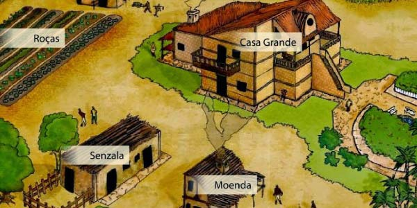

BRASIL COLÔNIA
O Brasil Colônia correspondeu ao período em que Portugal colonizou a porção leste da América do Sul, que hoje corresponde à grande parte do território brasileiro. De 1500 até 1822, os portugueses colonizaram o Brasil, explorando suas riquezas para atender às demandas do mercado europeu. Apesar disso, a historiografia recente reconhece o período anterior à colonização efetiva dos portugueses como Pré-Colonial, equivalente ao período de 1500 a 1530 e à primeira fase da colonização no país.
Período Pré-Colonial do Brasil
A colonização do Brasil foi iniciada com a chegada dos portugueses, em 22 de abril de 1500, e o período pré-colonial do Brasil corresponde à primeira fase do processo de colonização. A esquadra liderada por Pedro Alvares Cabral tinha como destino original as Índias, para estreitar os laços comerciais que os portugueses haviam estabelecido com os orientais. Assim, Pedro Alvares Cabral desembarcou no Brasil, mas o seu primeiro destino eram as Índias.
Algumas correntes historiográficas questionam o destino de Cabral em 1500. Alguns historiadores afirmam que o seu destino era, de fato, a América, pois Portugal reconheceu a existência de novas terras a oeste logo após a chegada de Cristovão Colombo, em 1492.
A missão cabralina era assegurar o domínio português sobre as terras a serem descobertas. Essa afirmação encontra justificativa nas discussões entre portugueses e espanhóis na elaboração do Tratado de Tordesilhas.
A princípio, a demarcação feita foi questionada por Portugal, que desejava uma fronteira mais a oeste. Deduz-se que esse pedido seja um reconhecimento da Coroa portuguesa de que Colombo não havia chegado a uma simples ilha, mas sim a um continente mais extenso, e que era do interesse de Portugal colonizar as regiões que ainda não tinham sido dominadas pela Espanha.
Logo após o desembarque, os portugueses encontraram no pau-brasil a primeira atividade econômica da colônia recém-conquistada, pois era uma árvore abundante no litoral brasileiro. A madeira e a seiva da árvore foram usadas pelos europeus na confecção de móveis e no tingimento dos tecidos.
Não era um produto valioso no mercado externo, mas era a primeira oportunidade encontrada para dar início à colonização brasileira. Os indígenas extraíam a árvore e a colocavam nas embarcações portuguesas em troca de produtos sem valor comercial, como espelhos e outros apetrechos.
Início do Brasil Colônia
Com a crise do comércio das especiarias, em meados do século XVI, os portugueses decidiram investir na ocupação e exploração do Brasil. As tentativas de invasão vindas da França e da Inglaterra também fizeram com que Portugal ocupasse em definitivo o território brasileiro. Por três séculos, os portugueses dominaram o Brasil, explorando suas riquezas, como a cana-de-açúcar e o ouro, cobrando impostos e abafando revoltas coloniais, até 7 de setembro de 1822, data da proclamação da independência brasileira.
Implantação das capitanias hereditárias no Brasil Colônia
Os portugueses adotaram no Brasil a mesma forma de administração utilizada nas colônias da ilha da Madeira, no litoral africano. O território foi dividido em porções de terra para serem distribuídas entre nobres aliados da Coroa portuguesa. Eram as capitanias hereditárias.
A ideia era descentralizar a administração colonial. Os donatários, como foram chamados os que geririam as capitanias, tinham como função garantir a segurança, verificar se a região era próspera para a exploração e garantir o pleno cumprimento das ordens reais. O desinteresse dos donatários em investir no Brasil fez com que as capitanias hereditárias não dessem certo. Apenas as capitanias de Pernambuco e São Vicente prosperaram.
Implantação do Governo-Geral no Brasil Colônia
Como a descentralização do poder não conseguiu administrar de forma eficiente o Brasil Colônia, a Coroa portuguesa decidiu centralizar o governo a partir da província da Bahia. Iniciava-se o Governo-Geral, com a colônia sendo governada pelo governador-geral, uma pessoa de confiança do rei de Portugal para exercer o domínio metropolitano. O primeiro governador foi Tomé de Souza, e uma de suas ações à frente do governo foi a construção da cidade de Salvador, que se tornou a primeira capital brasileira.
O Governo-Geral investiu na construção de engenhos de cana-de-açúcar, atividade econômica que prosperou nos primeiros tempos coloniais. Ao longo do litoral nordestino, espalharam-se inúmeras plantações de cana-de-açúcar, cujo principal objetivo era abastecer o mercado europeu.
Portugal fez um acordo com a Holanda: os portugueses enviariam a cana-de-açúcar para a Europa, e os holandeses ficariam responsáveis pelo refino e a comercialização do produto. Estabeleceu-se, dessa forma, o Pacto Colonial, no qual Portugal teria o monopólio do comércio brasileiro, fazendo que a economia colonial girasse em torno dos interesses metropolitanos.
Com os governadores-gerais, chegaram ao Brasil os primeiros padres jesuítas. Esses religiosos vieram em missão para evangelizar os indígenas. Não demorou para que os padres entrassem em conflito com os portugueses por conta do uso do trabalho indígena.
Enquanto os colonos queriam escravizar os indígenas para o trabalho na lavoura de açúcar, os jesuítas defendiam sua ação missionária. Esse conflito foi apaziguado com os religiosos conduzindo os indígenas para regiões distantes do litoral e mantendo o trabalho de evangelização. Nas missões jesuíticas, os indígenas trabalhavam na terra e dela se sustentavam.
Com o fracasso na escravidão indígena e a necessidade urgente de mão de obra para trabalhar no plantio e colheita da cana-de-açúcar, os portugueses encontraram nos negros africanos a força trabalhadora.
A partir do século XVI até 1888, o Brasil se sustentou tendo como base a mão de obra escravizada negra, primeiramente nos engenhos de açúcar no Nordeste, e depois na mineração no centro-sul colonial. Os negros africanos foram escravizados e o tráfico negreiro se tornou uma das atividades mais rentáveis do Brasil Colônia.

O Governo-Geral ficou responsável pela defesa da colônia, para isso, instalou em pontos estratégicos inúmeras fortificações militares para garantir a posse portuguesa das terras povoadas e expulsar as tribos indígenas mais avessas ao contato com o colonizador. A ameaça dos franceses invadirem a Baía da Guanabara fez com que o governador-geral Estácio de Sá construísse a cidade do Rio de Janeiro, que, em meados do século XVIII, tornou-se capital da colônia.
Economia no Brasil Colônia
Enquanto o Brasil esteve sob o domínio de Portugal, a economia foi de exportação, para atender aos interesses do mercado externo. A primeira atividade econômica foi a extração do pau-brasil. Como os portugueses não encontraram nenhum metal precioso no primeiro contato com a terra recém-encontrada, o comércio daquela árvore da Mata Atlântica possibilitou aos colonizadores um ganho na exploração do Brasil Colônia. A Coroa portuguesa acreditava que encontraria metais preciosos com a mesma facilidade com que os espanhóis encontraram na América Central.
Percebendo que a terra colonial era fértil e o clima favorável, os portugueses deram início, no século XVI, à plantação de cana-de-açúcar. Engenhos foram construídos no litoral nordestino para a produção açucareira. Com o fracasso na escravização da mão de obra indígena, a solução veio dos negros africanos. À medida que se produzia açúcar, maior era o número de escravizados negros em solo brasileiro. O tráfico negreiro se tornou uma atividade econômica altamente lucrativa.
A crise do açúcar ocorreu em meados do século XVII, quando os holandeses foram expulsos de Pernambuco. Os invasores começaram a plantar cana-de-açúcar nas Antilhas, sua colônia na América Central, e logo se tornaram concorrentes do açúcar brasileiro. Isso fez com que o preço da produção açucareira feita no Brasil se desvalorizasse. A Coroa portuguesa decidiu então investir em expedições para o interior brasileiro, no intuito de descobrir metais preciosos e fazer a colônia voltar a dar lucro.
No século XVIII, bandeirantes que saíram de São Paulo para o sertão do Brasil encontraram na região de Minas Gerais as primeiras minas de ouro. Logo que a notícia se espalhou, milhares de pessoas se deslocaram para as regiões, dando origem às primeiras cidades no interior brasileiro, como Ouro Preto, Mariana e Cidade de Goiás.
Tal qual na produção açucareira, os metais preciosos foram levados para Portugal. Em torno das minas de ouro, formou-se um comércio que atendia às demandas dos exploradores. A mão de obra usada nas minas era a negra escravizada. Para aumentar o controle sobre a produção do ouro, a Coroa portuguesa decidiu transferir a capital do Brasil de Salvador para o Rio de Janeiro.
Fim do Brasil Colônia
O fim do Brasil Colônia esteve atrelado à crise do Antigo Regime na Europa. A Revolução Francesa e a Era Napoleônica alteraram a dinâmica política europeia, enfraquecendo diversas monarquias absolutistas.
Ao não atender ao pedido francês de romper os laços econômicos com a Inglaterra, Portugal teve seu território invadido por tropas napoleônicas. Isso motivou a fuga da família real portuguesa para o Brasil, no ano de 1808. Essa transferência fez com que o centro do poder saísse da metrópole e se instalasse na colônia.
Enquanto Portugal enfrentava a invasão da França, o Brasil pôde ampliar sua autonomia com as medidas tomadas pelo rei português d. João VI, como a abertura dos portos às nações amigas e a elevação a Reino Unido de Portugal, Brasil e Algarves. A luta pela independência brasileira se tornou ordem do dia e de muito interesse para a elite colonial, que considerava o domínio português como um entrave para o seu desenvolvimento econômico.
Com o retorno de d. João VI para Portugal logo após a Revolução do Porto, o príncipe regente d. Pedro I permaneceu no Brasil e descumpriu todas as ordens portuguesas. O apoio da elite fê-lo liderar e declarar a independência do Brasil, que ocorreu em 7 de setembro de 1822, em São Paulo.
Exercícios logo abaixo, clique no botão para aparecer

(ENEM 2021)
Texto I
Texto II
A repugnante tarefa de carregar lixo e os dejetos da casa para as praças e praias era geralmente destinada ao único escravo da família ou ao menor status ou
valor. Todas as noites, depois da dez horas, os escrevos conhecidos popularmente como “tigres” levavam tubos ou barris de excremento e lixo sobre a cabeça
pelas ruas do Rio.
KARASCH, M. C. A vida dos escravos no Rio de Janeiro, 1808 – 1850. Rio de Janeiro: Cia das Letras. 2000.
A ação representada na imagem e descrita no texto evidencia uma prática do cotidiano nas cidades no Brasil nos séculos XVIII e XIX caracterizada pela:
(ENEM 2022) Para os Impérios Coloniais, o problema das doenças que atingiam os escravos era algo com que cotidianamente deparavam os senhores. Em vista
disso, uma série de obras dedicadas à administração de escravos foi publicada com vista a implementar uma moderna gestão da mão de obra escravista em
convergência com O Iluminismo. Nesse contexto, o saber médico adquiria um papel extremamente relevante. Este era encarado como um instrumento fundamental ao
desenvolvimento colonial, dada a percepção do impacto que as doenças tropicais causavam na população branca e nos povos escravizados.
ABREU, J. L. N. A Colônia enferma e a saúde dos povos: a medicina das “luzes” e as informações sobre as enfermidades da América portuguesa. História,
Ciências, Saúde – Manguinhos, n. 3, jul.-set. 2007 (adaptado).
De acordo com o texto, a importância da medicina se justifica no âmbito dos objetivos: